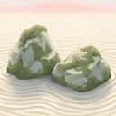
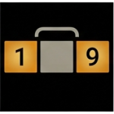
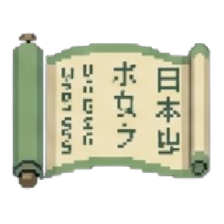
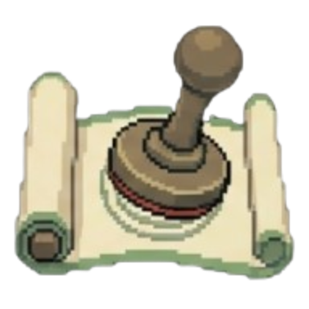
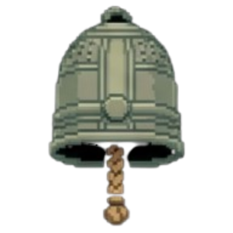
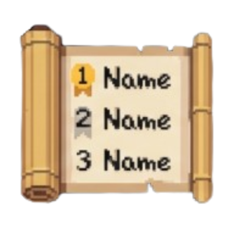
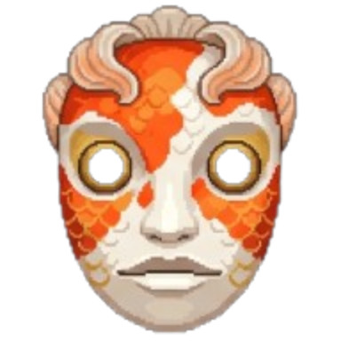
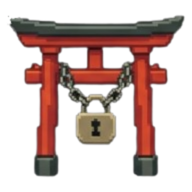
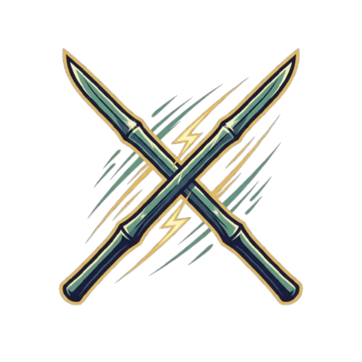

Run of the Nine
Roadmap
Plans, not promises: we change course when playtesting says so.

1
NowNext updates

More puzzle rulesNew modifiers in batches: diagonals, extra regions, Sandwich, Little Killer, new cages and arrows
More languagesBeyond EN, DE, FR, ES and PT-BR, with help from our community translators
Seed sharingShare a run as a short code and play the exact same run as your friends A new lookThe whole run in ink and paper: the path as a hand scroll, puzzles on a hanging scroll
A new lookThe whole run in ink and paper: the path as a hand scroll, puzzles on a hanging scroll
8-bit soundA full chiptune soundtrack and new sound effects
2
NextMid term

Seed leaderboardsA leaderboard for every Seed of the week and Monthly Walk Steam DeckMade for the Deck's screen and controls
Steam DeckMade for the Deck's screen and controls
Bosses with their own rulesEvery boss brings a signature twist- More relics, items and eventsNew ways to build a run
 Custom puzzle codesShare your own puzzles; a community puzzle of the week
Custom puzzle codesShare your own puzzles; a community puzzle of the week More accessibilityColour-blind safe colours, text size, an easy-to-read font
More accessibilityColour-blind safe colours, text size, an easy-to-read font
3
LaterLong term
 Full releaseBalance pass, every screen in the new look, every language complete
Full releaseBalance pass, every screen in the new look, every language complete
A second gardenFive new floors with new regions, bosses and paintings Steam WorkshopShare custom puzzles and modifier sets
Steam WorkshopShare custom puzzles and modifier sets
Race modeRace a friend on the same seed, first against their recorded run More platformsOnce the PC version is stable
More platformsOnce the PC version is stable
Ideas? #rotn-feedback · vote in #pollsKratossos Games · October 2026